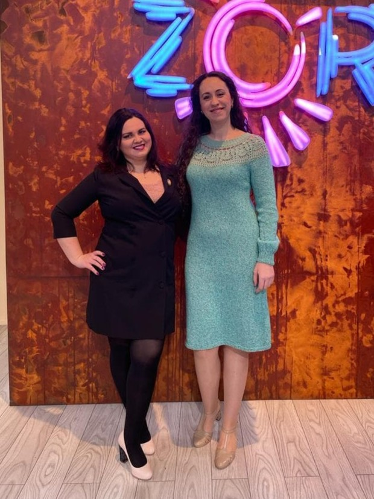
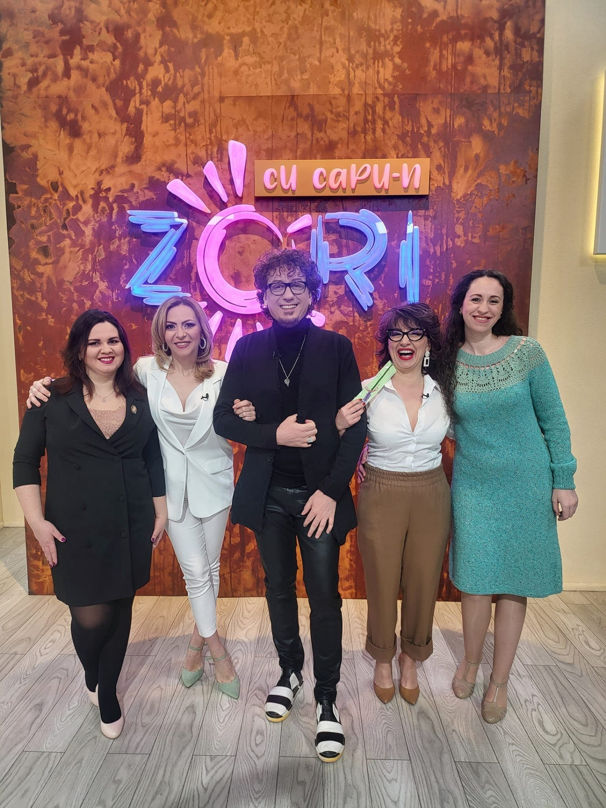

Vise Împletite cu Vio și Clau
(eng. Braided Dreams with Vio and Clau)


"Our goal was and is to help more people find these (knitting and crocheting) hobbies. We managed to gather, until now, a community of over 42 thousand wonderful souls, passioned about handmade, a number big enough to fill the Grand Arena stadium from Cluj.
Three years ago we started writing crocheting and knitting patterns. Since then we created over 100 patterns, varying in difficulty from begginer to advanced. We create these patterns monthly, both for women, men, and children (we are the only ones in Romania)."